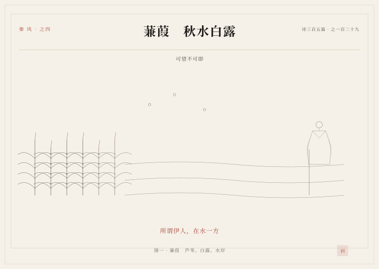
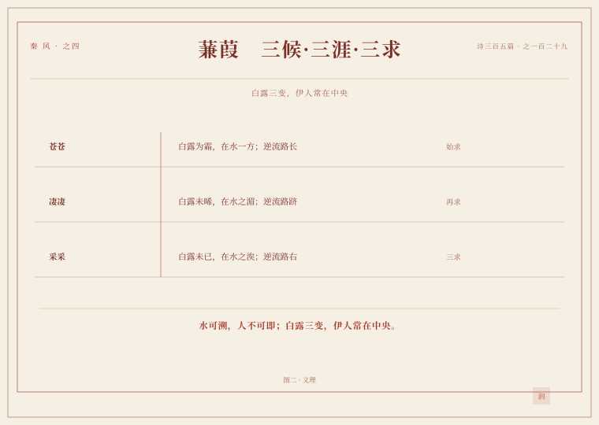

第一百二十九篇 蒹葭
秦风 · 之四 SJ129
朗读 · 普通话
依经文原文朗读，章次不读出；配古琴底乐，不改速、不加拖腔。全库同一音色（豆包 TTS），非播音员录制。
一 解题
诗三判：
- 谁在说：秋水岸边求而不得的人。他隔水张望，逆流去寻、顺流去寻，所见伊人宛然在前，终不可即。
- 说什么事：三章换「苍苍／凄凄／采采」「为霜／未晞／未已」「一方／湄／涘」「长／跻／右」「中央／坻／沚」；溯洄、溯游两叠不改，宛在三叠，近而终不可至。
- 为何编在此：秦风前二篇车邻、驷驖、小戎皆车马田狩兵戎之事，此篇独以秋水苍茫起兴。毛序以为刺襄公未能用周礼，朱传以为不知何所指；卷次由戎车转入求索之思，此是秦风一篇异境。
《毛序》：“《蒹葭》，刺襄公也。未能用周礼，将无以固其国焉。”
朱子《诗集传》：“赋也。蒹，似萑而细，高数尺，又谓之藨。葭，芦也。蒹葭未败，而露始为霜，秋水时至、百川灌河之时也。伊人，犹言彼人也。一方，彼一方也。遡洄，逆流而上也。溯游，顺流而下也。宛然，坐见貌。在水之中央，言近而不可至也。○言秋水方盛之时，所谓彼人者，乃在水之一方，上下求之而皆不可得。然不知其何所指也。”
本库的看法：《蒹葭》是一首把「求之不得」写成三叠水程的诗。
蒹葭、白露、秋水是境象；伊人是所求之物的影子——贤人、知己、礼、道，皆可寄之，不可坐实。毛序以刺襄公、求周礼之贤人为说；朱子存疑，谓不知何所指。本库从朱读，毛序之说作为背景，不把伊人指认为某一人。
断语：上下求之皆不可得，境愈清而求愈切；宛在者，近而不可即也。
先辨五事：「溯洄」是逆流而上，不是回溯往事；「溯游」是顺流而下，不是游水；「湄」是水草交际的岸，不是眉目；「坻」是小渚，不是坻堮；「沚」是小渚，不是停止。
二 经文
第一章
蒹葭苍苍，白露为霜。
所谓伊人，在水一方。
溯洄从之，道阻且长。
溯游从之，宛在水中央。
第二章
蒹葭凄凄，白露未晞。
所谓伊人，在水之湄。
溯洄从之，道阻且跻。
溯游从之，宛在水中坻。
第三章
蒹葭采采，白露未已。
所谓伊人，在水之涘。
溯洄从之，道阻且右。
溯游从之，宛在水中沚。
分章：三章，章八句。
三 韵读
- 一章：苍、霜、方、长、央，阳部。一韵开阔，秋气先到。
- 二章：凄、晞、湄、坻，脂部；跻，支部，支脂通押。露未干，路已高。
- 三章：采、已、涘、右、沚，之部。三章收于「沚」，水愈浅而人愈远。
- 三章「溯洄从之」「溯游从之」两联重出，不主实韵；重句是往返两路，不是复沓凑韵。
读法：一章露已为霜，二章三章露未晞、未已；水程由方而湄而涘，道阻由长而跻而右。三章只换境象，所不变者是求而不可得。
四 字义与名物
- 蒹：似萑而细，高数尺，又名藨；葭：芦。毛传「蒹，薕；葭，芦也」，朱传同；从毛朱，不拆为两种草名相加。
- 苍苍：盛貌。凄凄：犹苍苍；一作「萋萋」。采采：盛而可采之貌。毛传「采采，犹萋萋」，朱传「盛而可采」；从朱传，取繁盛可采之义。
- 白露为霜：露凝戾为霜。未晞：未干，毛传「晞，乾也」。未已：未止。
- 伊人：彼人。毛传「伊，维也」；郑笺读伊为繄，犹是也，谓知周礼之贤人；朱传「伊人，犹言彼人也」，不指实。本库从朱传存象，笺说贤人作为背景。
- 一方：难至矣。湄：水草交际之处，水之岸。涘：厓，水边。
- 溯洄：逆流而上。溯游：顺流而下。毛传「逆流而上曰溯洄，顺流而涉曰溯游」；从毛传，两言皆就渡水立喻。
- 跻：升也，笺言难至如升阪。右：不相直而出其右；笺谓迂回。坻：小渚。沚：小渚。宛：坐见貌，近而不可至。
五 今译
蒹葭苍苍一片，白露凝结成霜。我所念的那个人，就在水的那一方。逆流去寻她，道路险阻又漫长；顺流去寻她，仿佛就在水中央。
蒹葭凄凄繁茂，白露还未晒干。我所念的那个人，就在水草相接的岸边。逆流去寻她，道路高陡难登；顺流去寻她，仿佛就在小洲上。
蒹葭采采盛多，白露还未收干。我所念的那个人，就在水边厓岸。逆流去寻她，道路迂回绕弯；顺流去寻她，仿佛就在小沚上。
六 章旨
- 一章：霜始降而蒹葭苍苍；伊人在水一方，道阻且长，宛在中央。求之始远，已觉可望不可即。
- 二章：露未晞而蒹葭凄凄；伊人在湄，道阻且跻，宛在坻上。路愈高陡，人愈近水湄而愈不可登。
- 三章：露未已而蒹葭采采；伊人在涘，道阻且右，宛在沚上。路愈迂回，宛在之象三叠不改。
- 总收：三章水程由方而湄而涘，所阻由长而跻而右；溯洄溯游两路并陈，所求者在前，所隔者在水。
七 诗教
- 兴：以秋水蒹葭起兴，苍茫之境兴难求之心；境愈清寂，求意愈切。
- 观：观求者上下两路——溯洄为逆、溯游为顺；两路皆阻，见所求之不在路之远近。
- 群：一人临水，三章自问自答；求而不得之叹，可通于众人怀思之境。
- 怨：怨在「宛在」二字；不怨伊人不至，只怨道阻且长。
八 分寸与边界
- 不可把蒹葭读成游春。此是秋水苍茫、白露为霜；一读成春景，溯洄溯游就成踏青戏水。
- 不可把溱洧读成求仙。彼是上巳春游、赠芍药、礼不在而花为凭；此是秋水求之不得。两诗同涉水边，读法必须分开：不可把蒹葭读成游春，也不可把溱洧读成求仙。
- 不可把伊人坐实为某一贤人或某一美人。朱子明言不知何所指；一指认，求贤或思人之径就把全诗的象压死。
- 不可把溯洄、溯游解作水路之外的登山绕路；诗中所阻皆在水程，两言皆就渡水立喻。
- 不可把「宛在」解作「就在」。宛是坐见貌，近而不可至；一读就在，道阻且长便成空话。
- 不可把蒹葭当植物图谱逐株辨认。蒹葭是水边苇草一类，诗中所写是境象，不是博物。
九 存疑
- 诗旨：毛序刺襄公未能用周礼；朱传不知何所指；后世或以为思贤、或以为怀人、或以为求道。本库存象，不硬断。
- 伊人所指：毛笺以为知周礼之贤人；后世或以为美人；诗中无文可证其必为谁。
- 二章首句：毛诗作「凄凄」，一作「萋萋」；朱传从「凄凄」。
- 「右」：毛传「出其右也」，笺谓迂回；一说右为水之右岸。从迂回。
- 地域：诗中水是秦风何地之水，旧说泛指泾渭之间，不可实指为某一川。
- 时序：一章露已为霜，二章三章露未晞、未已；三时是倒叙还是并陈，旧说不一。
十 跨典
- 《诗经·郑风·溱洧》（SJ095）：“溱与洧，方涣涣兮。”——同涉水边；彼上巳春游、赠勺药、花为凭证，此秋水求而不得。两诗对读，水边两境不可混。
- 《论语·子罕》：“逝者如斯夫，不舍昼夜。”——临水兴感；此诗隔水求索，同是水心，所感一为逝川、一为怀思。
- 《楚辞·九歌·湘夫人》：“沅有芷兮澧有兰，思公子兮未敢言。”——隔水所思之辞；汉魏以后慕思之绪，多自此诗「宛在」一境流出。
- 《诗经·秦风·终南》（SJ130）：同卷次篇；一为秋水伊人求索，一为南山君子戒劝，秦风两境并观。
- 《诗经·秦风·无衣》（SJ133）：同卷；一求而不得，一同袍赴难，卷中情志正相对照。
十一 双卡与图
六对：
| 溯洄（逆流而上） |
溯洄（回溯往事） |
| 溯游（顺流而下） |
溯游（游泳戏水） |
| 伊人（彼人，所指不定） |
伊人（某一贤人／美人坐实） |
| 湄（水草交岸） |
湄（眉目） |
| 宛在（近而不可至） |
宛在（就在眼前） |
| 沚（小渚） |
沚（停止） |

图一 · 蒹葭 秋水苇丛、在水一方

图二 · 蒹葭 溯洄溯游、求之不得
读图三处：
- 苇丛：图一蒹葭三丛分据岸次，叶穗可辨而不施面；草是境象，不画成植物谱。
- 水与渚：图一水纹两曲，中央一渚小圈；伊人只留虚位空圈，不画全身，不画五官。
- 两路：图二左右两线分溯洄、溯游，中贯「宛在」一格；所求者虚，朱色只收在「不可至」一断。
断语：水可溯，人不可即；白露三变，伊人常在中央。